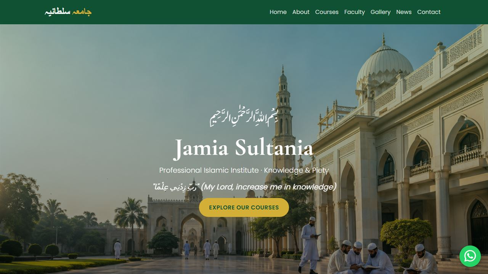

Share information clearly
The institution needed an accessible online home for students, families and its wider community.
Clear content structure
A responsive information structure makes key details easier to find across screen sizes.
Live community website
A live website that gives the institution a focused digital home for its community.